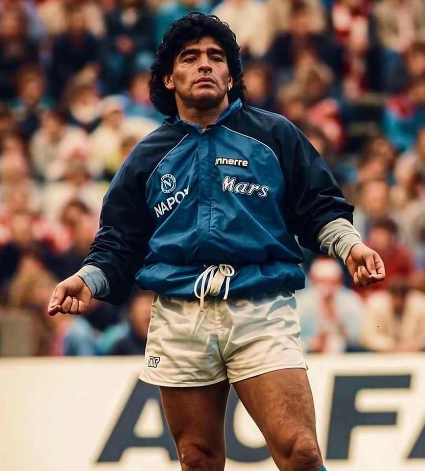

Episode 01 · Generative Art
致敬马拉多纳 · Life is Life
Python「扫描写生」动画说明
以 Python 纯代码完成「扫描写生」：从空白画布出发，经横向 / 纵向扫描逐步显现肖像， 书法题匾「致敬马拉多纳」渐进落成。本页对应 YouTube 成片，并开放 draw_maradona.py 供爱好者下载学习。
作品在做什么
这不是传统手绘录屏，而是用程序控制「画布如何被填满」： 原图像素按扫描条带（横条 / 纵条）逐步粘贴到画布上，观众看到的是 从无到有的写生过程，最终锁定为高清肖像，并配合书法题匾动画。

预览图：成片终点效果示意（本地项目导出）。
技术要点（对照源码）
- 扫描操作队列：横条
("h", y0, y1)、纵条("v", x0, x1)等 Op 序列驱动动画时间轴。 - 呈现时长：整场默认约 240s 量级，与墙钟 / 配乐对齐，避免拖沓。
- 书法题匾：使用项目内字体（如
fonts/MaShanZheng-Regular.ttf）绘制「致敬马拉多纳」并渐进落成。 - 导出视频：可导出帧序列与
maradona.mp4（依赖 FFmpeg；含配乐时注意版权）。 - 虚拟环境：脚本会检查项目
.venv，避免误用全局 Python 缺依赖。
下载与运行（学习用）
本站提供核心脚本下载： draw_maradona.py （约 1400 行）。完整复现还需要你本地准备：
- Python 3.10+ 与虚拟环境
Pillow（以及脚本用到的其它依赖，按报错补齐）- 源图（默认同目录
Maradona.jpg） - 可选：书法字体、配乐
life_is_life.mp3、FFmpeg（导出 mp4）
版权与合规：
本说明页与源码分享用于学习与致敬表达。马拉多纳肖像与「Life is Life」等配乐可能涉及肖像权 / 版权与 YouTube Content ID；
公开传播、商用或重新上传前请自行评估授权。学习请尊重球王与创作者权利。
建议的最小运行方式
# 1) 创建虚拟环境并安装依赖
python3 -m venv .venv
source .venv/bin/activate # Windows: .venv\Scripts\activate
pip install pillow
# 2) 准备目录（示例）
mkdir -p Maradona/fonts
# 将 draw_maradona.py 与 Maradona.jpg 放入 Maradona/
# 可选：书法字体放到 Maradona/fonts/
# 3) 在「项目根」运行（脚本会校验 .venv）
# 注意：源码里 PROJECT_ROOT 默认为脚本父目录的上一级
python Maradona/draw_maradona.py
# 导出视频（需本机 FFmpeg 等，见脚本帮助）
python Maradona/draw_maradona.py --export-mp4
若你从本站单独下载了 draw_maradona.py，请打开文件顶部注释，按其中的
HERE / PROJECT_ROOT / 路径约定放置资源，或按你的目录结构小幅修改路径常量。
你能学到什么
- 用操作队列做「时间轴动画」而不是逐像素手动画线
- Pillow 图像合成、字体绘制、帧导出思路
- 程序艺术（Generative / Procedural Art）的可复现工程化组织
相关链接
- YouTube：https://www.youtube.com/watch?v=75VQOWijf4E
- 源码下载：draw_maradona.py
- 视频库首页：/videos/
- 接单 / 部署服务：站点首页